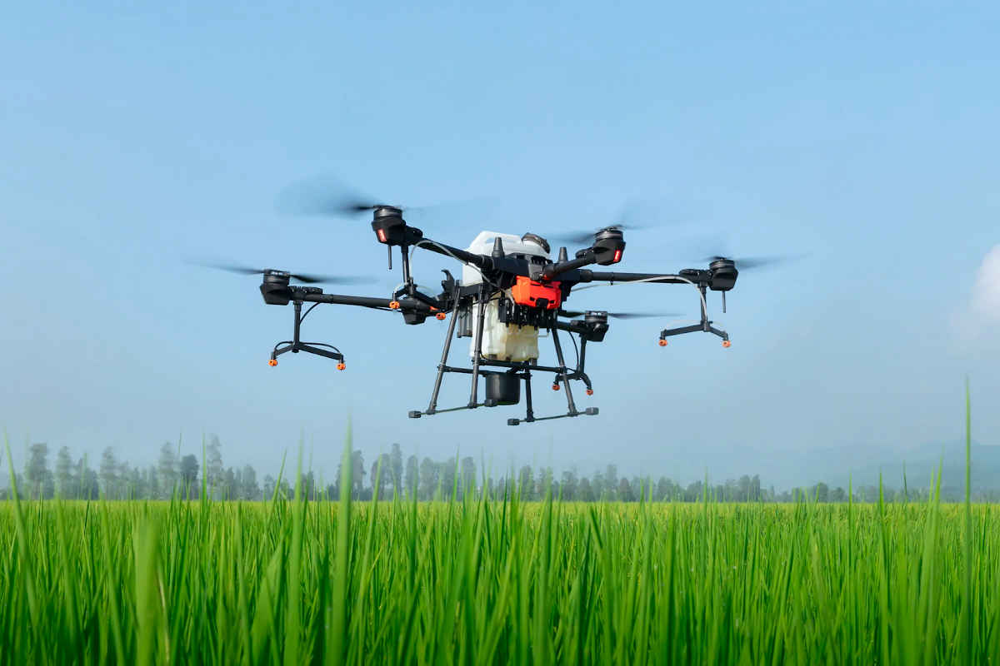
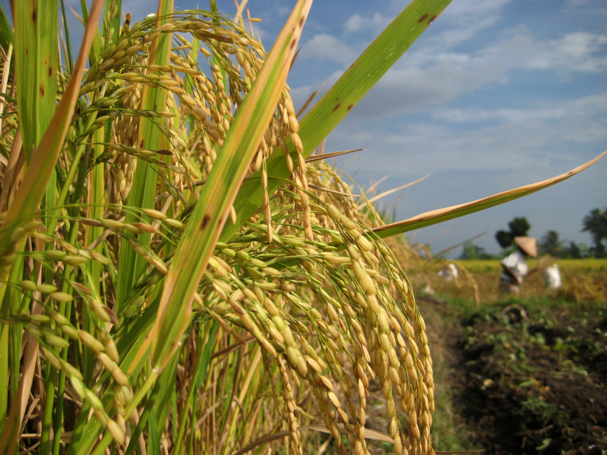

Pada Tahun 2022 ini kami menggulirkan PROGRAM RICE ESTATE ORGANIK - PENGEMBANGAN SAWAH TERPADU ORGANIK. Kenapa sawah? Sebab sawah ini usaha riil dan strategis. “Mengembangkan sawah ini dilatari oleh visi dan misi besar, yakni membantu pemerintah untuk mengembalikan kedaulatan pangan NKRI sebagai Negeri Berbasis Pertanian,”
Program ini dijalankan dengan CORPORATE FARMING - SRI SYSTEM sebagai ikhtiar untuk mendorong petani dan masyarakat untuk mempunyai pilihan hidup sehat. “Kita dan anak-anak kita hari ini, tak bisa memilih makanan yang bebas pestisida. Jikapun ada, jumlah makanan berbahan organik sedikit, itupun mahal dan tak bisa dijangkau seluruh masyarakat”,
Al-Qur’an surat Al-Hijr ayat 19-20, Allah SWT berfirman: “Dan kami hamparkan bumi, kami jadikan pada bumi tersebut gunung-gunung, dan kami tumbuhkan segala sesuatunya (di bumi) dengan menjaga keseimbangan (ekosistemnya) agar bumi ini kami jadikan sebagai sumber rezeki bagi kamu (manusia) dan bagi mahluk lain yang rezekinya bukan urusan kamu”. Dari ayat tersebut telah jelas bahwa, Allah SWT menumbuhkan segala sesuatu dengan tetap menjaga keseimbangan ekosistem dan kelestariannya.
Saat ini GHO memfokuskan areal pengembangan proyek di Sulawesi Tengah. Sebagai tahap awal, “Pilot Proyek” Persawahan akan dibangun di Lembah Napu, Kabupaten Poso seluas 25 Hektar dari potensi lahan yang dapat dijadikan Persawahan seluas 5.000 Hektar.
1. Sawah 25 Hektar
Perlengkapan dan Peralatan Sawah
1. PLTS, Mesin Pompa, Paralon
2. Traktor MT 180 D + Rotary + Canopy, 8 Hektar / Hari
3. Rice Transplanter CRT 45 New, 2,5 Hektar / Hari
4. Combine Harvester CCH – 2000 STAR, 6 Hektar / Hari
5. Drone, 12 Hektar / Hari
Perusahaan
Benih Padi dan Pupuk : PT. Nusa Berkat Alam
Lembaga Pendidikan SMK Pertanian : SMK Pertanian Poso
Lembaga Pembiayaan dan Pemasaran : Koperasi Pembiayaan Syariah Rahmatan Lil Alamin Matahari
| NO | Komponen | Sistem Biasa | SRI -Organik |
|---|---|---|---|
| 1 | Kebutuhan Benih | 30-40 Kg / Ha | 5 Kg / Ha |
| 2 | Pengujian Benih | Tidak Dilakukan | Dilakukan |
| 3 | Umur Persemaian | 20-30 HSS* | 7-10 HSS |
| 4 | Pengolahan Tanah | 2-3x (Struktur Lumpur) | 3x ( Struktur Lumpur dan Rata ) |
| 5 | Jumlah Tanaman Per Lubang | + 5 Pohon | 1 Pohon |
| 6 | Posisi Akar | Tidak Teratur | Horisontal (L) |
| 7 | Pengairan | Terus Digenangi | Disesuaikan Dengan Kebutuhan |
| 8 | Pemupukan | Mengutamakan Pupuk Kimia | Pupuk Organik |
| 9 | Rendemen | 50-60% | 60-70% |
1. Tanaman Hemat Air, hanya butuh
50% dari pertanian biasa/konvesional.
2. Hemat Biaya dan Tenaga, hanya butuh benih 5 kg/Hektar
dan sedikit pekerja.
3. Hemat Waktu , penanaman
bibit dan waktu panen lebih awal.
4. Produksi Meningkat.
5. Ramah Lingkungan.
created with
Static Site Generator .